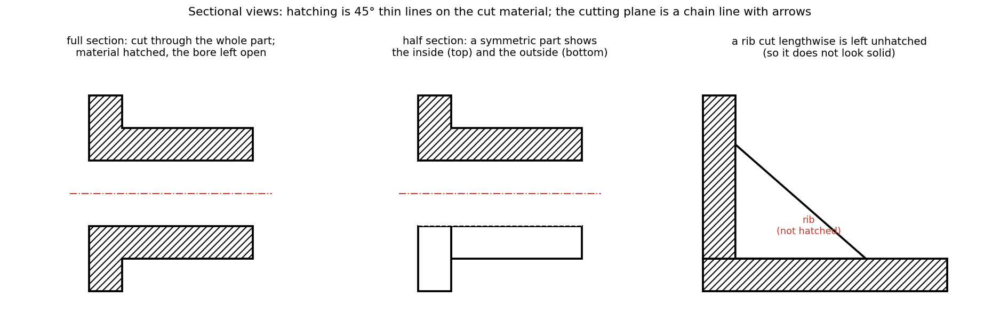

Sectional Views and Hatching Conventions
Hidden lines in an ordinary view of a hollow part turn into a tangle. A sectional view imagines the part cut by a plane, removes the nearer half, and shows what the cut exposes: the cut material is hatched and everything beyond the plane is drawn with ordinary lines. The cutting plane is marked on the other view with a chain line and two arrows that give the viewing direction.
Part of Computer Aided Machine Drawing - MOC. Builds on Engineering Drawing - MOC (views and line types). Next: Screw Threads and Threaded Fasteners.
1. Principle
- The cutting plane is drawn in the view perpendicular to it as a thin chain line, thick at the ends and at changes of direction, with arrows showing the viewing direction and the letters A–A at each end.
- The section is labelled "SECTION A–A".
- Hatching (section lining) is applied only to the surface that was actually cut.
- Hidden lines are omitted in the section unless they are needed for clarity: the cut makes them visible.
2. Hatching rules
| Rule | Detail |
|---|---|
| Lines | thin, continuous, at 45° to the main outline (or to the axis of symmetry) |
| Spacing | uniform, 1.5–3 mm (about 2 mm) in proportion to the area |
| Adjacent parts in an assembly | hatched at opposite angles (45° and 135°) or with different spacing; the same part in different views keeps the same hatching |
| Thin sections (sheet, gaskets) | filled solid black |
| Lines never cross a dimension or text; leave a gap | |
| Material indication | different hatch patterns for materials (cast iron, brass, rubber, glass) in assemblies; the plain 45° pattern for general use |

3. Types of section
| Type | Use |
|---|---|
| Full section | the plane passes through the whole part (left of the figure): most holes, bores and internal shapes |
| Half section | for a symmetric part: one quarter is cut away; half is shown in section and half as an ordinary external view. No hidden lines are needed (middle) |
| Offset section | the cutting plane is bent to pass through features that are not in a line (holes at different positions) |
| Revolved (rotated) section | the cross-section of a rib, spoke or arm is turned through 90° and drawn on the view |
| Removed section | the same, but drawn nearby, outside the view, often enlarged |
| Aligned section | features such as ribs, spokes and holes on a pitch circle are rotated into the cutting plane so that they appear in true size, not foreshortened |
| Partial (broken-out) section | a local cut-away with an irregular break line |
| Auxiliary section | the cutting plane is inclined; the view is projected perpendicular to it |
4. Features that are not hatched (the exception rules)
Ribs, webs, spokes, gear teeth, shafts, bolts, nuts, keys, pins, rivets, screws and washers are not sectioned when the cutting plane passes lengthwise through their axis or midplane, because hatching would make them look like solid mass (right panel above). They are hatched when the cut is across them. This is why a bolt in an assembly section is shown as a plain view while the plates around it are hatched.
5. Worked reading: a flanged bush
A flanged bush has a bore Ø20, body Ø40 × 50 long, flange Ø60 × 10. The front view with a full section A–A shows two hatched L-shaped strips above and below the axis with the bore as a clear band between them; the axis is a chain line. The half section of the same part shows the upper half cut and the lower half as an outline with the flange visible; for this symmetric part, it conveys the same information in one view.
- Hatching the bore: the hatched region is the metal; the empty hole is left open.
- Using the same hatch direction for two touching parts: the boundary between them disappears.
- Hatching a rib cut lengthwise.
- Drawing hidden lines inside the section.
- Forgetting the section label and the arrows on the cutting-plane line.
Predict first: a stepped shaft in an assembly with a gear on it. Is the shaft hatched in a section along its axis?
No. A solid shaft cut along its axis is not hatched by convention (it would look the same as the gear's body). The gear hub around it is hatched; the shaft is drawn as a plain view with break lines where needed.
When is a half section preferable to a full section?
When the part is symmetric about the cutting plane and both the inside and the outside must be shown in one view: a half section saves a second view, but the internal outline of the unsectioned half must not be drawn with hidden lines.
6. Connections
- Engineering Drawing - MOC, Lettering and Types of Lines and Projection Symbol and First-Angle Projection — line types (chain thin/thick, continuous thin for hatching) and first-angle views used here.
- Assembly Drawings, 3D Modelling and Bills of Materials — hatching conventions for adjacent parts.
- Free-Body Diagrams and Equilibrium of Rigid Bodies — the imaginary cut of a drawing is the same mental act as the cut of a free-body diagram: expose an internal surface.